판금제관산업기사 (2002-08-11 기출문제)
1과목: 판금제관재료, 공구 및 기계
1. 직선날 전단기로 연강을 전단 가공할 때 윗날과 아랫날의 틈새는 얼마가 적당한가? (판재 두께에 대한 % 이며, 판두께는 3 mm 이하인 경우)
- 1 - 2 %
- 6 - 9%
- 20 - 30 %
- 40 - 60 %
(정답률: 알수없음)

2. 다음 중 프레스와 전단기의 안전수칙 중 틀린 것은?
- 페달은 X자형의 덮개를 쒸울 것
- 정지시에는 스위치를 반드시 끄고 페달을 밟아 놓지말 것
- 공동작업을 할 때에는 페달을 밟은 사람을 정해 놓고 작업한다.
- 작업하기 전에 한번 공회전시켜 클러치, 스프링 및 브레이크 상태를 점검한다.
(정답률: 알수없음)
3. 압력을 가하는 시간을 길게 유지할 수 있고, 과부하에 대한 안전장치가 있으며 특히 행정의 어느 위치에서도 일정한 가압력이 발생하는 프레스는?
- 크랭크 프레스(crank press)
- 캠 프레스(cam press)
- 유압 프레스(hydraulic press)
- 익센트릭 프레스(eccentric press)
(정답률: 알수없음)
4. 보통 컴퍼스로 그릴 수 없는 긴 선분을 옮기거나, 큰 원을 그릴 때 사용하는 것은?
- 빔 컴퍼스
- 스프링 컴퍼스
- 보통 컴퍼스
- 서피스 게이지
(정답률: 알수없음)
5. 다음 중 방호장치의 기본 목적은?
- 기계의 오작동을 방지하기 위하여
- 작업자에게 경각심을 주기 위하여
- 작업 중 주위에 사람의 접근을 막기 위하여
- 인적이나 물질적 손실을 방지하기 위하여
(정답률: 알수없음)
6. 판금용 기계 중 갱슬리터에 의한 설명으로 잘못된 것은?
- 두 개의 평행축에 여러개의 원형날이 있다.
- 나비가 넓은 판재를 띠모양으로 길게 전단하는 기계이다.
- 판재를 직선이나 원형 및 임의의 모양으로 전단하는 기계이다.
- 좁은 띠판을 변형없이 정확한 치수로 대량생산이 가능하다.
(정답률: 알수없음)
7. 그림과 같은 심(seam)방법은?
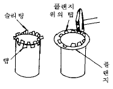
- 캡스트립 시임
- 스탠딩 시임
- 더브테일 시임
- 피츠버그 록 시임
(정답률: 알수없음)
8. 램의 구동방식에 따른 동력 프레스브레이크(press break)의 종류가 아닌것은?
- 크랭크식
- 편심(판)식
- 유압식
- 피니온 및 래크식
(정답률: 알수없음)
9. 다음 중 도수율은 어느 것인가?
- 재해발생건수/연근로시간수 × 1,000,000
- 산업재해건수/근로자수 × 1,000
- 노동손실일수/연근로시간수 × 1,000
- 산업재해건수/근로자수 × 100,000
(정답률: 알수없음)
10. 압력용기 제작시 운반에 이용되는 기계가 아닌 것은?
- 호이스트(hoist)
- 와이어 로프(wire rope)
- 크레인(crane)
- 컨베이어(conveyer)
(정답률: 알수없음)
11. 청동의 종류 중에서 Sn 8 - 12%에 Zn 1 - 2%를 첨가한 구리 합금으로 해수에 잘 침식되지 않아 선박 등에 널리 사용되는 것은?
- 인 청동
- 베어링용 청동
- 포금
- 미술용 청동
(정답률: 알수없음)
12. 봉재의 치수 표시법이 틀린 것은?
- 원형강 - 지름
- 반원형강 - 지름
- 6각강 - 대변의 길이
- 사각강 - 대각선의 길이
(정답률: 알수없음)
13. 일반적으로 내식성, 내열성, 내한성이 우수하고 기계적 성질도 좋아 판금 재료 중에서 가장 우수한 재료는?
- 스테인리스 강판
- 알루미늄 피복 강판
- 오스테나이트 망간 강판
- 규소 강판
(정답률: 알수없음)
14. 판금재료로 가장 많이 쓰이는 철강의 특성을 설명한 것 중 틀린 것은?
- 전연성이 풍부하여 판금 공작이 쉽다.
- 재료를 구하기 쉽고 비교적 값이 싸다.
- 제조 과정을 자동화 하기 쉬워 대량 생산이 가능하다
- 내식성, 내열성, 내산성이 매우 크므로 수명이 길다.
(정답률: 알수없음)
15. 강은 약 200∼300 ℃에서는 강도는 크지만 연신율이 대단히 작아져서, 여린 성질을 나타내는 것을 무엇이라 하는가?
- 청열취성
- 적열취성
- 상온취성
- 고온취성
(정답률: 알수없음)
16. 열간 압연 연강판 중 소성 가공성을 높이기 위해 킬드강으로 만든 것은?
- SHP 1
- SHP 2
- SHP 3
- SHP 4
(정답률: 알수없음)
17. 독기가 없고 안전한 식료품 그릇, 가정용품, 공업용 기구등에 적당한 강판은?
- 아연도금 강판
- 주석도금 강판
- 열간압연 강판
- 냉간압연 강판
(정답률: 알수없음)
18. 두랄루민(duralumin)의 주성분으로 다음 중 맞는 것은?
- Al＋Mn＋Cu＋Mg
- Cu＋Mg＋Mn＋Ni
- Sn＋Mg＋Mn＋Cu
- Al＋Cu＋Sn＋Mg
(정답률: 알수없음)
19. 강판의 결함 중 가열하여 늘인 산화물이 선 모양, 점 모양 혹은 고리모양으로 판 표면에 나타나는 현상은?
- 피트(pit)
- 스케브(scab)
- 스케일(scale)
- 웨이브(wave)
(정답률: 알수없음)
20. 다음 관(pipe)의 종류 표시기호중 고압배관용 탄소강관을 나타내는 것은?
- SPPH
- STH
- STHB
- SPHT
(정답률: 알수없음)
2과목: 판금제관공작법
21. 현장에서 사용하는 KS 제품 규격 번호가 ㉿ B 1503-99등으로 표시되어 있을 경우 설명 중 틀린 것은?
- ㉿ : KS 제품임을 표시한다.
- B : 제품의 명칭 영문자 약호이다.
- 1503 : KS 규격번호가 1503 이다.
- 99 : 해당 규격의 제정 또는 최종 개정년도가 1999년이다.
(정답률: 알수없음)
22. 체인졍로우프졍코일 스프링 등과 같은 모양의 반복부분을 생략할 때 쓰는 가상선으로 다음 중 가장 적합한 것은?
- 가는 이점쇄선
- 가는 일점 쇄선
- 파선
- 은선
(정답률: 알수없음)
23. 다음 도면 해독에 대한 설명으로 올바른 것은?
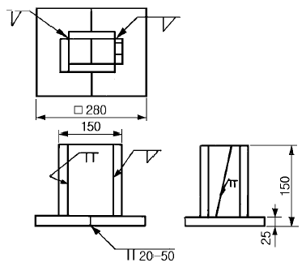
- 용접선의 수는 11개
- 강판의 부품 갯수는 7개
- 도면대로 용접한 후 용기 위에서 물을 넣으면 누수되지 않는다.
- 밑판은 20mm 용접하고, 50mm은 용접하지 않는 단속 용접이다.
(정답률: 알수없음)
24. 그림은 절단된 직육각뿔의 정면도로 선분
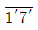
와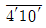
은 실장이다. 평면도에서 기선에 평행하게 나타나는 변은?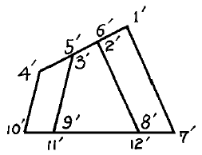
- 변9'10'
- 변7'8'
- 변2'8'
- 변1'7'
(정답률: 알수없음)
25. 다음 정면도와 우측면도의 평면도로 가장 적합한 것은?
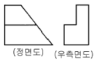
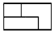
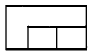
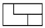
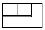
(정답률: 알수없음)
26. 보기와 같은 정면도와 좌측면도에 가장 적합한 평면도는?
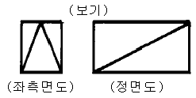
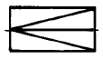
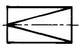
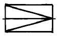
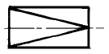
(정답률: 알수없음)
27. 보기 입체도를 제3각법으로 올바르게 투상한 것은?
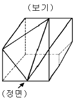
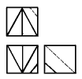
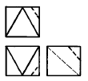
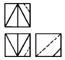
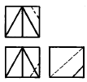
(정답률: 알수없음)
28. KS 나사의 표시방법 중 호칭이 3/4 인치인 관용 테이퍼 암나사를 표시하는 기호는?
- R 3/4
- Rc 3/4
- PT 3/4
- Rp 3/4
(정답률: 알수없음)
29. 보기의 용접부 검사기호의 설명으로 올바른 것은?
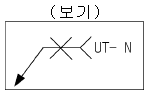
- 방사선 투과시험 수직탐상 (보기)
- 초음파 탐상시험 수직탐상
- 와류 탐상시험 수평탐상
- 누설 탐상시험 수평탐상
(정답률: 알수없음)
30. 보기의 그림은 리벳이음 보일러의 간략도와 부분 상세도이다. 냘 판의 두께는?
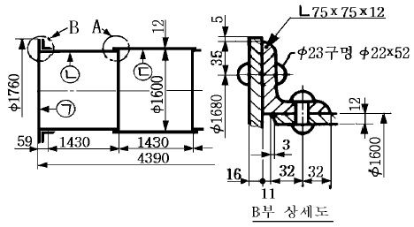
- 11mm
- 12mm
- 16mm
- 32mm
(정답률: 알수없음)
31. 오므리기 가공에서 소재판 지름(D)에 대한 제품의 지름(d)의 비(= d/D)을 무엇이라 하는가?
- 오므림비
- 오므림률
- 압하율
- 단면 수축률
(정답률: 알수없음)
32. 다음 그림과 같은 제품을 판금정을 사용하여 굽히려 할때 가장 적합한 순서는?
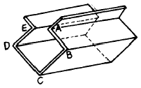
- A, B, C, D, E
- A, C, E, B, D
- B, D, C, A, E
- A, E, B, D, C
(정답률: 알수없음)
33. 다음 그림과 같은 방법으로 행하는 심(seam)을 무엇이라 하는가?
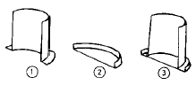
- 더브테일 심
- 보텀더블 심
- 스텐딩 심
- 피츠버그록 심
(정답률: 알수없음)
34. 리벳작업시 리벳 길이가 짧으면 어떤 현상이 일어나는가?
- 완전한 모양을 만들 수 없다.
- 정확한 리벳 작업을 할 수 있다.
- 구부러지기 쉽고 헐겁게 되어 불완전한 결과가 된다.
- 강도가 강하게 된다.
(정답률: 알수없음)
35. 두께 0.8mm의 판재를 그루브 심하려고 한다. 심 나비를 5mm로 할때 심 여유는?
- 2.4mm
- 15mm
- 17.4mm
- 19mm
(정답률: 알수없음)
36. 그림과 같은 원뿔을 각도기를 써서 전개하고자 한다. 어떤 공식을 이용하여 계산할수 있는가?
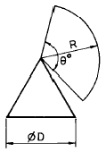
- θ° =180D/R
- θ° =180R/D
- θ° =360R/D
- θ° =360D/R
(정답률: 알수없음)
37. 다음중 굽힘 가공시 고려할 사항이 아닌 것은?
- 판재의 방향성
- 전단면의 처리
- 균열방지 구멍
- 판재의 비중
(정답률: 알수없음)
38. 산화철에 철분을 첨가하여 만든 연강용 피복아크 용접봉으로 접촉용접을 할 수 있는 것은?
- E4313
- E4303
- E4327
- E4324
(정답률: 알수없음)
39. 다음 저항용접 중 겹치기 용접이 아닌 것은?
- 점 용접
- 업셋 용접
- 심 용접
- 프로젝션 용접
(정답률: 알수없음)
40. 서브머지드 아크용접에 대한 결점으로 옳지 않은 것은?
- 개선 홈의 정밀을 요한다.
- 작업능률이 수동용접에 비해 떨어진다.
- 적용 자세에 제약을 받는다.
- 적용 재료의 제약을 받는다.
(정답률: 알수없음)
3과목: 기계제도 및 용접일반
41. 가스절단의 결과에 영향을 미치는 요소가 아닌 것은?
- 팁의 크기 및 형태
- 절단 속도
- 가스의 순도
- 가스용기 내의 압력
(정답률: 알수없음)
42. 철골 구조물에 사용되는 기둥에는 조립기둥이 있다. 다음 중 조립기둥에 속하지 않는 것은?
- 플레이트 기둥
- 트러스 기둥
- 래티스 기둥
- 형강 기둥
(정답률: 알수없음)
43. 압력용기를 제작후 수압에 의한 내압시험을 할 경우 시험 압력은 최고 허용압력의 몇배 정도로 하는가?
- 1.2배
- 1.5배
- 2.0배
- 2.5배
(정답률: 알수없음)
44. 굽힘 가공에 의한 스프링 백(spring back)에 대한 설명으로 틀린 사항은?
- 탄성한계 및 강도가 높을수록 스프링백의 양이 커진다.
- 동일한 판두께에 대한 굽힘 반지름이 클수록 스프링백의 양은 커진다.
- 같은 두께의 판재에서 굽힘각도가 예리할수록 스프링백의 양은 작아진다.
- 동일한 굽힘 반지름에 대해서는 두께가 얇을수록 스프링 백의 양은 커진다.
(정답률: 알수없음)
45. 다음 그림에서 L1=120mm, L2=180mm, L3=120mm일 때 바깥치수 가산법에 의해 계산한 재료의 길이는? (단, 판재의 두께는 2mm, 늘임 보정값은 3이다.)
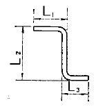
- 420mm
- 414mm
- 426mm
- 413mm
(정답률: 알수없음)
46. 판뜨기 할 때 원을 12등분하여 직선으로 옮기면 전체 원주 길이의 몇 %의 오차가 생기는가?
- 1.15%
- 0.64%
- 0.31%
- 0.12%
(정답률: 알수없음)
47. 아크용접에서 피복제의 역할로서 적당하지 않는 것은?
- 아크의 안정과 용융 금속을 보호한다.
- 용착 금속의 탈산 및 정련 작용을 한다.
- 스패터링을 적게 한다.
- 용착 금속의 응고와 냉각 속도를 빠르게 한다.
(정답률: 알수없음)
48. 내용적 40L의 산소용기에 80kgf/cm2의 산소가 들어 있다. 1시간에 아세틸렌 200L를 사용하는 토치를 사용하여 혼합비 1:1의 중성불꽃으로 가스용접을 하면 몇 시간동안 사용할 수 있는가?
- 12시간
- 16시간
- 18시간
- 32시간
(정답률: 알수없음)
49. 그림과 같은 리벳이음에서 하중이 1000kgf, 리벳의 직경이 10mm일 때 리벳에 작용하는 전단응력은?
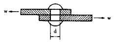
- 8 kgf/mm2
- 13 kgf/mm2
- 22 kgf/mm2
- 30 kgf/mm2
(정답률: 알수없음)
50. 다음 그림과 같은 형상은 판금전개도에서 무슨 전개방법으로 그려야 정확하게 전개도가 그려지는가?
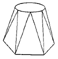
- 삼각형법
- 평행선법
- 방사선법
- 혼합법
(정답률: 알수없음)
51. 선반을 이용하여 판재를 금형과 함께 회전시키면서 성형가공하는 것을 무엇이라 하는가?
- 형 드로잉
- 딥 드로잉(deep drawing)
- 스피닝(spinning)
- 블랭킹
(정답률: 알수없음)
52. 다음 중 전단가공이 아닌 것은?
- 블랭킹(blanking)
- 트리밍(trimming)
- 엠보싱(embossing)
- 셰이빙(shaving)
(정답률: 알수없음)
53. 판두께 4mm의 연강판(전단강도 τ =30 kgf/mm2)에 Ø 300mm의 원판을 블랭킹할 때 블랭킹력은 몇 Ton이 필요한가?
- 90
- 100
- 115
- 125
(정답률: 알수없음)
54. 드로잉가공에서 소재의 두께가 얇은 경우에는 제품에 주름이 생기기 쉬우므로 이를 방지하기 위해 사용되는 것은?
- blank holder
- die holder
- punch holder
- knock out
(정답률: 알수없음)
55. 국부 가열에 의한 교정작업시 유의사항 중 틀린 것은?
- 가열 부분 이외의 온도가 높아지는 것을 방지하기 위해 두꺼운 철판이나 젖은 헝겊을 올려놓고 가열하면 효과적이다.
- 가열 온도가 너무 높으면 금속조직이 미세해지고 낮으면 변형제거 효과가 거의 없다.
- 가열 시간은 가급적 짧은 시간에 하도록 한다.
- 작은 불꽃으로 장시간 가열하면 열이 넓게 퍼져변형 제거의 효과가 없어진다.
(정답률: 알수없음)
56. 판금제관작업에서 변형을 교정하는 방법 중 열을 이용하여 주로 박판의 변형을 교정하는데 사용하는 방법은?
- 적열법
- 점 가열법
- 선 가열법
- 삼각 가열법
(정답률: 알수없음)
57. 다음 중 한계게이지에 대한 설명 중 틀린 것은?
- 최대치수와 최소치수의 범위를 측정한다.
- 측정이 쉽고 신속하여 대량검사에 적합하다.
- 축 또는 구멍의 크기를 측정하는데 적합하다.
- 통과측과 정지측을 가지고 있다.
(정답률: 알수없음)
58. 용접 변형방지 및 조립 정밀도를 목적으로 사용하는 지그는?
- 문형 피스
- 턴 버클용 피스
- 볼 탱크용 지그
- 스트롱 백
(정답률: 알수없음)
59. 철골구조의 지점 중 가장 강한 지점은?
- 고정 지점
- 핀 지점
- 롤러 지점
- 회전 지점
(정답률: 알수없음)
60. 다음 중 리벳 이음의 장점이 아닌 것은?
- 용접 이음과는 달리 응력에 의한 잔류 변형이 생기지 않는다.
- 경합금과 같은 용접이 곤란한 재료에는 신뢰성이 뒤진다.
- 철골 구조물 등에 직접 조립할 때에는 용접 이음보다 쉽고, 상호 호완성이 있다.
- 특별한 작업 외에는 숙련이 필요하지 않다.
(정답률: 알수없음)